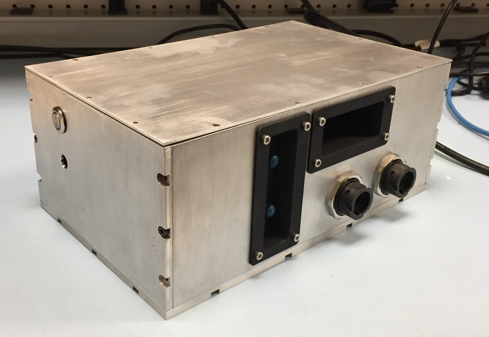
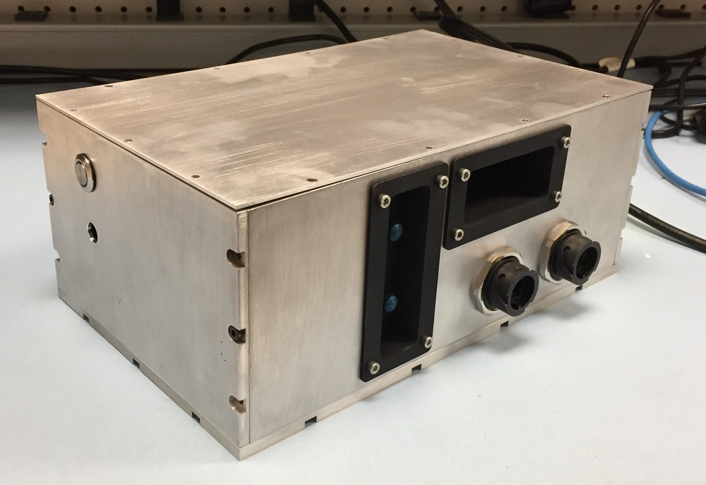

Field Reflectance Spectrometer
Project Overview:
As a part of my Masters research work at Carnegie Mellon University, I developed portable reflectance spectrometer system capable of being mounted to an autonomous robotic system to take rapid spectral measurements of the stalks and leaves of various crops. This page details the mechanical design, sensor selections, and fabrication process of creating this field reflectance spectrometer system.
Spectroscopy Overview:
At the broadest level, spectroscopy refers to the measurement of electromagnetic radiation as a function of wavelength or frequency due to some physical phenomenon. More specifically, the field of spectroscopy attempts to study the specific interaction between matter and light to try to understand the atomic and molecular structure and chemical composition of various materials (such as moisture, chlorophyll, and protein content).
More specifically, reflectance spectroscopy is the study of reflected or scattered light from a material. Reflectance spectroscopy has a few key advantages that make it particularly fit for in-field, automated measurements. Firstly, the process is nondestructive to the sample. A reflectance spectrometer can simply be placed up to the surface of a material to take a reading, whereas other spectroscopy techniques (absorption and emission spectroscopy) usually require lengthy and destructive material preparation that must be performed in a laboratory setting. Furthermore, reflectance spectroscopy is relatively cheap to perform and readings can be done in a matter of seconds. Therefore, reflectance spectroscopy was chosen as a technique for collecting crop data by the autonomous ground robot developed in conjunction with my research work at the Robotics Institute at Carnegie Mellon.
Portable reflectance spectrometers contain three basic components used for the measurement of light: a light source, a diffraction grating, and a light sensor or detector. The light source provides the initial introduction of radiation that is projected onto the sample. It is crucial for the light source to emit a continuous spectrum of radiation that covers the wavelengths measured by the spectrometer. The diffraction grating takes in a stream of broadband light and refracts the different wavelengths of light at slightly different angles, in essence separating the light so that the sensor in the spectrometer can measure the intensity of individual wavelengths. Lastly, the light sensor or detector is used to measure the intensity of light projected onto it. These three basic components and how they fit into the general construction of a spectrometer can be seen in the figures below. The right figure demonstrates a spectrometer system that must be placed on the surface of the sample. The left figure demostrates a system that uses a bifurcated fiber optic cable to collect reflected light from a sample.
Basic construction of a reflectance spectrometer
Reflectance spectrometer with fiber optic light collection
Light Source Design:

The selection of a proper light source used in a spectrometer is crucial to the accuracy and consistency of spectral reflectance measurements of a sample. At the most basic level, the light source must emit electromagnetic radiation throughout all wavelength bands measured by the sensors in the system. Although there are many robust, high quality light source assemblies on the market that are designed and optimized for spectroscopy applications, these assemblies are often expensive and rather large when considering the strict size constraints on this spectrometer project. Thus I ultimately decided to design a custom light source for the reflectance spectrometer system.
Bulb Selection:
I selected the Thorlabs HEP3965 Broadband IR Tungsten Bulb, shown in the figure below. This bulb produces a broadband output from about 400 to 5000 nm at a color temperature of 1900 K, resulting in a peak intensity right around 1500 nm. The bulb comes mounted in a small TO-8 can with a reflector placed behind the filament for greater forward facing luminous flux. The bulb can be driven up to 3.5 V with a maximum current of 2 A resulting in a maximum power rating of 7 W. Furthermore, this bulb comes with a threaded mounting adapter allowing for easy installation into Thorlabs lens tubes. These components allow for greater precision in filament alignment and imaging onto the end of the optical fiber.
Thorlabs broadband IR tungsten bulb and spectral output
Light Source Assembly:

- (a) Thorlabs S120-SMA - Lens tube cap with internal SM1 threading and SMA fiber connector
- (b) Thorlabs SM1RC and TR1 - SM1 Lens tube slip ring and vertical mounting post
- (c) Thorlabs SM1S20 - 2" Long SM1 lens tube spacer
- (d) Thorlabs CMRR - Retaining ring for SM1 lens tube
- (e) Thorlabs LB1761 - N-BK7 Bi-Convex Lens with 1” diameter and 25.4 mm focal length
- (f) Thorlabs LB1761-ML Housing - Mounting tube for lens and retaining ring
- (g) Thorlabs HSLT2 - Passive heat sink lens tube with internal SM1 threading
- (h) Thorlabs HEP3965 - Broadband infrared tungsten bulb
- (i) Thorlabs HEPM - Mounting adapter for HEP3965 bulb
As seen in the exploded view above, the tungsten bulb (h) rests inside a thick, circular adapter plate (i) with external threading. This adapter plate is then mounted inside a heat sink style lens tube (g) with many radial fins for added heat expulsion and greater convective cooling during use. Because the interior of the heat sink lens tube and the exterior of the bulb adapter plate are both finely threaded, the position of the bulbs filament along the axis of the tube can be precisely controlled. Attached to the front face of the heat sink lens tube is a short mounting tube (f) for an N-BK7, a type of borosilicate glass, biconvex lens (e). The next component along the optical axis is a two inch long lens tube (c) to properly space the lens from the optical fiber. On the end of the lens tube spacer is a threaded cap (a) with an SMA fiber connecter to attach a fiber optic cable for light collection. The entire assembly is held in space by a vertical mounting post with a large slip ring (b) that tightly hugs the two inch lens tube. This vertical mounting post can be fastened to the base plate of the spectrometer housing for rigid attachment within the larger system.